10 Plotting
There’s a number of built-in functions that we can use, and one of those we’ve used already, such as hist(). Others are also quite self-explanatory such as plot(), or barplot(). I’ll just show one, since this one is apparently very difficult to make in SPSS: the boxplot() function. Let’s make a boxplot of the three groups. The setup is almost identical to the aov() function we used before.
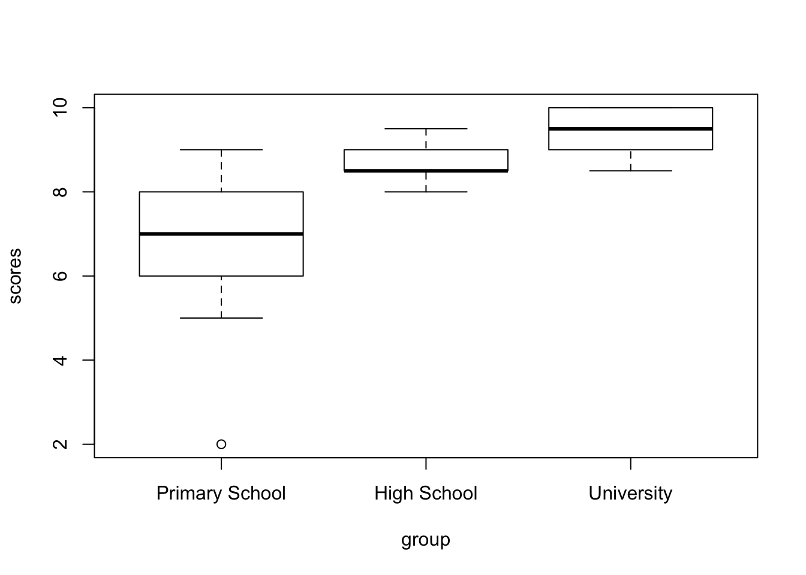
While this is already much better than the default output from SPSS, we can do better. And for that I want to introduce an immensely popular package. Once familiar with this package, you’ll recognize it on a great many manuscripts, posters and presentations: the {ggplot2} package. I’ll just create a plot first, and then I’ll go through how it works.
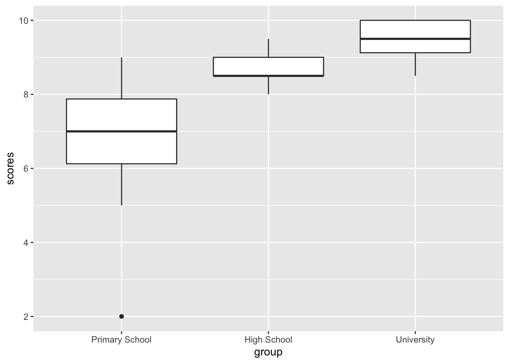
Just to show what is possible, the next plot has been made with just the {ggplot2} package and the {ggpubr} package. I won’t show the code just yet, but we might get to this level later, but this is what a fully modified ggplot() plot might look like:
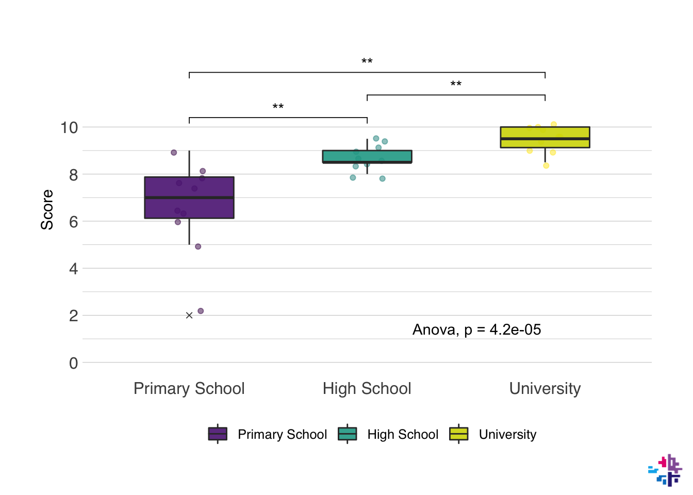
10.1 Basics & Mapping
Okay, so how do we go from the first simple plot to the second one? The functions in the {ggplot2} package effectively layer on top of each other. The first step is always a ggplot() function. Inside of this function you supply the data frame that contains the data you want to plot, and then you usually supply the mapping too. In the mapping you specify what you want on the x-axis, the y-axis, what the colors should represent (if anything), and there’s a few more options. You add the next layer by typing + at the end of the function.
10.2 Types of plot
The second layer is usually the type of plot you want to use, in our last example this was geom_boxplot(), but other options include geom_point() (for scatterplots), geom_line() (for line plots), geom_bar() (for bar charts), and many more. And you can layer them, like I did in the last example, where I added a geom_jitter() first, and then a geom_boxplot() on top of that.
Let’s follow along, now we have a call to ggplot() and a call to geom_jitter() and geom_boxplot(). Both these functions take a number of inputs. You can find a full list of options in all functions of R by typing ?<functionname>, e.g. ?geom_jitter. alpha in this context means the opacity of the color, width of geom_jitter() specifies the width along which the dots will be jittered. The width in both functions is the width along points will be scattered, or the width of the boxplot. outlier.shape determines the behavior of the outliers, outlier.shape = 4 changes the outlier to a little x.
ggplot(data = data_comb, mapping = aes(x = group, y = scores, fill = group)) +
geom_jitter(alpha = 0.5, width = 0.1) +
geom_boxplot(alpha = 0.9, width = 0.5, outlier.shape = 4)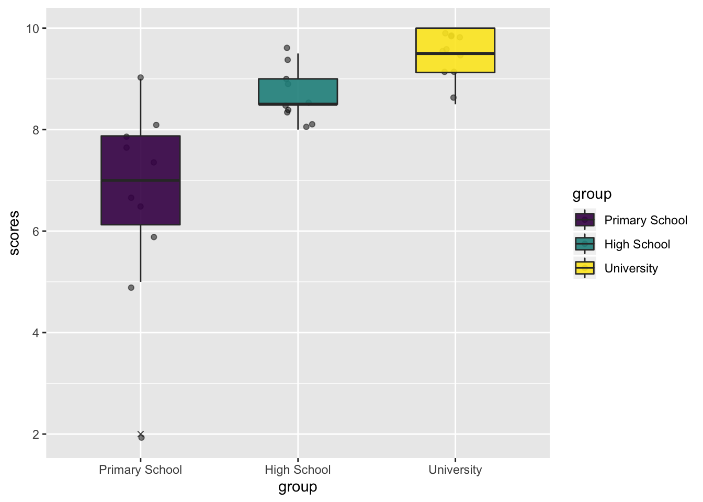
10.3 Layout and Style
Next, we add a number of layers to make the plot look prettier and more informative. These layers contain information about what you want the axes labels to say, and the specific colors to use. There’s an infinite amount of options for the color palettes. There’s entire packages dedicated to make your colors resemble colors in the Harry Poter universe, the families from Game of Thrones, the Ghibli movies, or the palettes from the Wes Anderson movies. The last one is pretty fun, so let’s use that. These color palettes are stored in the {wesanderson} package. Axes labels can be set with the labs() function, and the behavior of the axes itself can be set with scale_x_discrete() or scale_y_continuous() in this particular case. I think the x-axis looks good already, but I would like to change the y-axes behavior. For the colors we have two options, either a color setting or a fill setting. With a boxplot, the color setting will change just the lines of the boxplot, the fill setting changes the fill and not the lines. Keep this in mind when building your plot to always be consistent with the functions that affect the color or fill.
library(wesanderson)
ggplot(data = data_comb, mapping = aes(x = group, y = scores, fill = group)) +
geom_jitter(alpha = 0.5, width = 0.1) +
geom_boxplot(alpha = 0.9, width = 0.5, outlier.shape = 4) +
labs(x = NULL, # NULL in this context means "no label"
y = "Score",
fill = NULL) + # the fill in this case refers to the title of the legend
scale_y_continuous(breaks = seq(0,10,2), minor_breaks = seq(1,9,2), limits = c(0,10)) +
scale_fill_manual(values = wes_palette("IsleofDogs1"))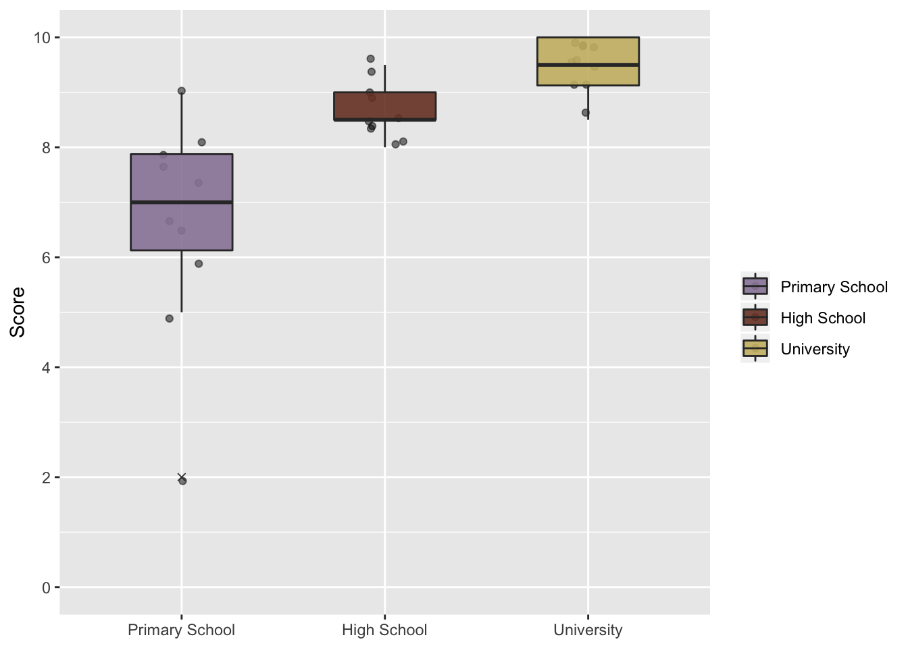
This is quite a bit better already, the different scale_ functions might be a bit confusing at first, but Google is a great help. The breaks and minor.breaks options in the scale_y_continuous() function determine where major and minor grid lines along the y-axis will be shown. The seq() function creates a sequence from the first input to the second input in steps determined in the third input. For instance:
## [1] 1 3 5 7 9## [1] 3 6 9 12 15The limits option sets the absolute limits from as c(<lower limit>, <upper limit>), since it’s good practice to always include the 0 in your plots when possible, and the maximum score anyone could have gotten was 10, we set the limits at 0 and 10 (i.e. sometimes you want to give limits some more space to allow for the random jitter to exceed the strict limits, e.g. c(0, 10.2)).
10.4 Themes
The last layers typically are about the general layout of the plot. This is where we set the theme of the plot and the specific settings. A popular theme is theme_minimal() or theme_bw(). But the {normentR} package has a specific theme that corresponds with the NORMENT style guide, it’s called theme_norment(). This deals with a number of small modifications in the theme. There’s a number of great themes out there, and I’ve tried to collect the best options from each into the theme_norment() function, it includes a dark-mode, quite a few options for the font type, size, etc., functions to remove the background (great for posters), and a few more.
Further options that you want to change from the functions included in the theme_<theme function> can be set in the theme() function. This function has almost an infinite number of options. Googling it might help.
ggplot(data = data_comb, mapping = aes(x = group, y = scores, fill = group)) +
geom_jitter(alpha = 0.5, width = 0.1) +
geom_boxplot(alpha = 0.9, width = 0.5, outlier.shape = 4) +
labs(x = NULL,
y = "Score",
fill = NULL) +
scale_y_continuous(breaks = seq(0,10,2), minor_breaks = seq(1,9,2), limits = c(0,10)) +
scale_fill_manual(values = wes_palette("IsleofDogs1")) +
theme_norment() + # set the NORMENT theme
theme(
panel.grid.major.x = element_blank(), # remove the grid lines on the x-axis
rect = element_rect(fill = "transparent") # make plot transparent
)10.5 Statistics in plots
I’ve included it in the plot earlier, but I’ll skip the pairwise T-tests for now. It’s quite simple with the {ggpubr} package, which includes a stat_compare_means() function which can be added as a layer to the plot. To add the ANOVA statistic, we just need to add the function to the plot, and specify the method we want to use in the method option. I’ll usually add this layer right after specifying the types of plot. The position of the ANOVA label can be moved to a specific place on the plot via the label.x and label.y options.
ggplot(data = data_comb, mapping = aes(x = group, y = scores, fill = group)) +
geom_jitter(alpha = 0.5, width = 0.1) +
geom_boxplot(alpha = 0.9, width = 0.5, outlier.shape = 4) +
stat_compare_means(method = 'anova', label.x = 2.5, label.y = 1.5) +
labs(x = NULL,
y = "Score",
fill = NULL) +
scale_y_continuous(breaks = seq(0,10,2), minor_breaks = seq(1,9,2), limits = c(0,10)) +
scale_fill_manual(values = wes_palette("IsleofDogs1")) +
theme_norment() +
theme(
panel.grid.major.x = element_blank(),
rect = element_rect(fill = "transparent")
)10.6 NORMENT options
At the risk of sounding like I’m trying to chove the {normentR} package down your throat, I do want to measure some of the plotting from the {normentR} package. It has a specific function that sets the colors in the plot to NORMENT colors. It also has a function to add the NORMENT logo to any plot (called show_norment_logo()), which is great for presentations or sharing of figures on social media. Here I’ve created an example using some of these functions.
plot <- ggplot(data = data_comb, mapping = aes(x = group, y = scores, fill = group)) +
geom_jitter(alpha = 0.5, width = 0.1) +
geom_boxplot(alpha = 0.9, width = 0.5, outlier.shape = 4) +
stat_compare_means(method = 'anova', label.x = 2.5, label.y = 1.5) +
labs(x = NULL,
y = "Score",
fill = NULL) +
scale_y_continuous(breaks = seq(0,10,2), minor_breaks = seq(1,9,2), limits = c(0,10)) +
scale_fill_norment(discrete = TRUE, palette = "mixed") +
theme_norment() +
theme(
panel.grid.major.x = element_blank(),
rect = element_rect(fill = "transparent")
)
show_norment_logo(plot)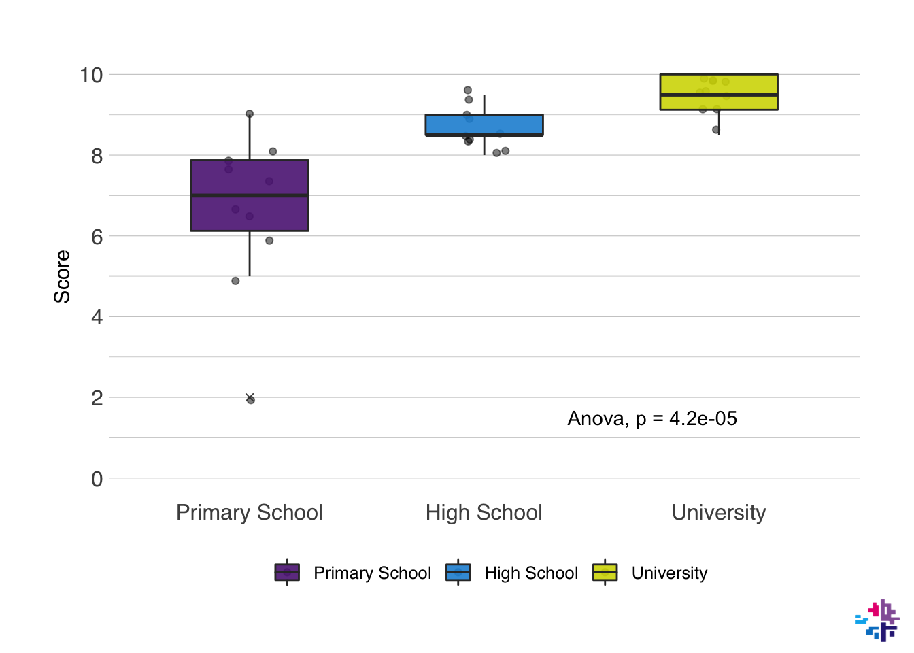
The package also contains a function to move the axis to a specific place on the plot, which is useful for ERP plotting for instance, this function is called shift_axes(). The color palettes included in the {normentR} package can be found using show_norment_palette(), which creates an image with the organization of different palettes.
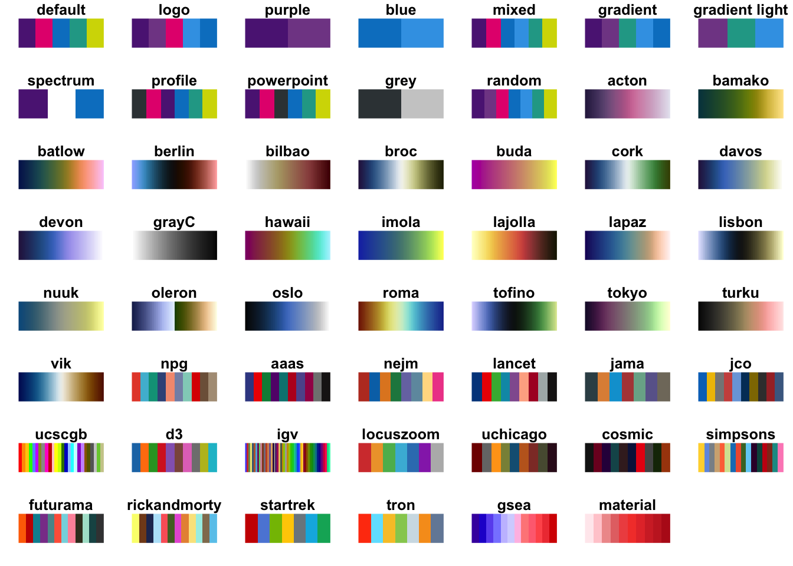
You can create your own NORMENT palette by combining the colors manually. You can see the available colors by using the norment_colors command, which prints a list of the names and the HEX codes. You can create your own palette as shown below.
## purple light purple magenta blue light blue green yellow
## "#5c2483" "#814994" "#e5007d" "#0081c9" "#3CA2E6" "#21a695" "#d3d800"
## black grey light grey white
## "#000000" "#384044" "#cccccc" "#ffffff"my_norment <- c(norment_colors[["purple"]], norment_colors[["green"]], norment_colors[["yellow"]])
print(my_norment)## [1] "#5c2483" "#21a695" "#d3d800"I will admit that these colors are not great for individuals with colorblindness, or for printing in greyscale. There are some great packages available that will take care of this very elegantly, particularly the {scico} package, that can be found here.
10.7 More examples
So now I want to go into a few more examples. For this we need to bring out the powerhouse of R, the {tidyverse} package. The {tidyverse} package contains a number of packages within to help move through your analysis in a more organized, easier, and generally better way. The {tidyverse} package is basically a collection of packages that include {ggplot2}, {readr} (to load data more efficiently), {dplyr} (to more effectively clean your data), and {tidyr} (to help organize your data in a tidy way), I might dedicate an entire section to the {tidyverse} later, but we’ll use some functions already now.
Let’s try some things out with this using some data from Gapminder. Gapminder data is also stored in the {gapminder} package, Let’s say we’re only interested in data from Norway, so we filter only the data from Norway. Let’s also select all data from 2007 from all countries. The names() function lists the names of columns. The head() function prints only the first few rows of the data frame instead of the full data frame like print() does.
## [1] "country" "continent" "year" "lifeExp" "pop" "gdpPercap"data_norway <- filter(gapminder, country == "Norway") # select only Norway
data_2007 <- filter(gapminder, year == 2007) # select only 2007
print(data_norway) # show all rows of data_norway## # A tibble: 12 x 6
## country continent year lifeExp pop gdpPercap
## <fct> <fct> <int> <dbl> <int> <dbl>
## 1 Norway Europe 1952 72.7 3327728 10095.
## 2 Norway Europe 1957 73.4 3491938 11654.
## 3 Norway Europe 1962 73.5 3638919 13450.
## 4 Norway Europe 1967 74.1 3786019 16362.
## 5 Norway Europe 1972 74.3 3933004 18965.
## 6 Norway Europe 1977 75.4 4043205 23311.
## 7 Norway Europe 1982 76.0 4114787 26299.
## 8 Norway Europe 1987 75.9 4186147 31541.
## 9 Norway Europe 1992 77.3 4286357 33966.
## 10 Norway Europe 1997 78.3 4405672 41283.
## 11 Norway Europe 2002 79.0 4535591 44684.
## 12 Norway Europe 2007 80.2 4627926 49357.## # A tibble: 6 x 6
## country continent year lifeExp pop gdpPercap
## <fct> <fct> <int> <dbl> <int> <dbl>
## 1 Afghanistan Asia 2007 43.8 31889923 975.
## 2 Albania Europe 2007 76.4 3600523 5937.
## 3 Algeria Africa 2007 72.3 33333216 6223.
## 4 Angola Africa 2007 42.7 12420476 4797.
## 5 Argentina Americas 2007 75.3 40301927 12779.
## 6 Australia Oceania 2007 81.2 20434176 34435.So let’s do some plots again! First, I’m interested in how the life expectancy changed in Norway from the earliest recording to the most recent one in the dataset. I want to make a line plot for this. Let’s do it:
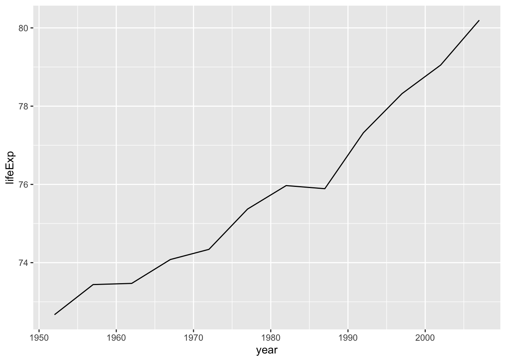
So this is the simplest ggplot we can make, but we can do better. Let’s add some elements we learned about earlier.
ggplot(data = data_norway, mapping = aes(x = year, y = lifeExp)) +
geom_line(size = 2, color = "darkred") + # size refers to the width of the line
labs(x = "Year",
y = "Life expectancy at birth (years)") +
theme_norment() +
theme()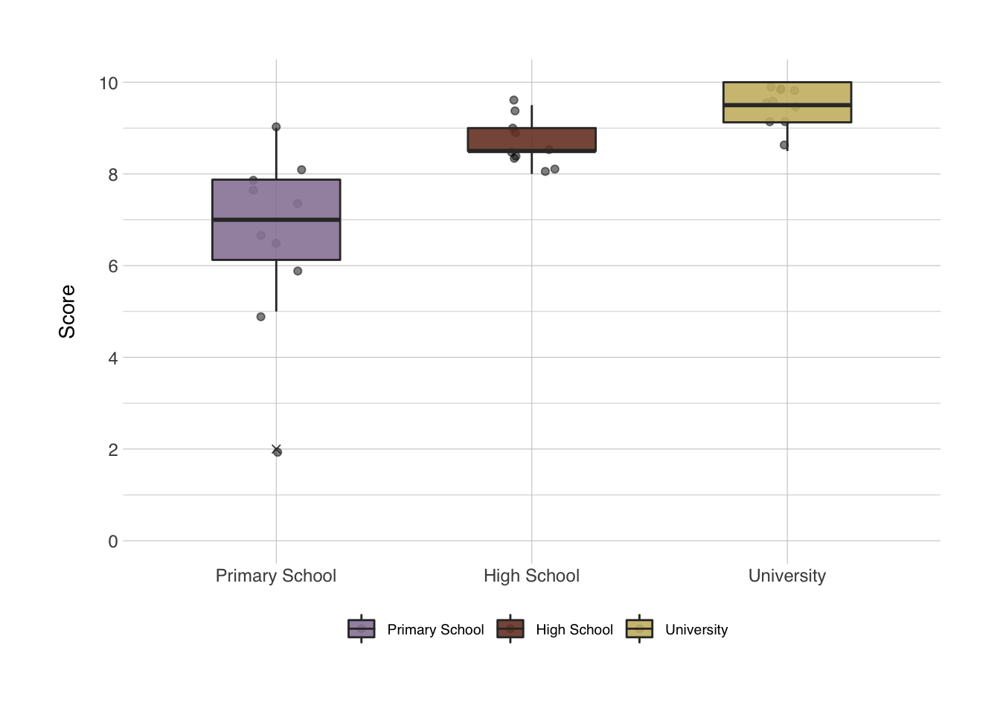
Now I want a scatter plot for all countries that had data recorded in 2007. At the same time, I’m also interested in the relationship with life expectancy with GDP per capita. So I’ll plot GDP per capita on the x-axis, and life expectancy on the y-axis. I want to color based on the continent, and the {gapminder} package has a set of colors for the continents stored in continent_colors.
ggplot(data = data_2007, mapping = aes(x = gdpPercap, y = lifeExp)) +
geom_point(mapping = aes(color = continent), size = 3, alpha = 0.75) + # I want to only apply the color to the points
geom_smooth(method = "loess", color = "grey20") + # add a loess model to the points
scale_color_manual(values = continent_colors) +
labs(x = "GDP per capita (US$)",
y = "Life expectancy at birth (years)",
color = NULL) +
theme_norment() +
theme()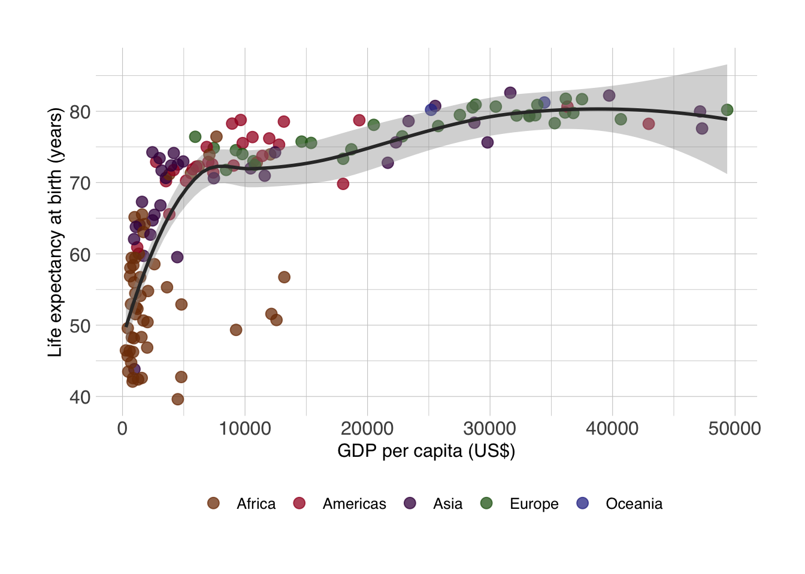
If we really wanted to recreate the famous Gapminder plots, we should make the size of the points dependent on the size of the populations, which we can do.
ggplot(data = data_2007, mapping = aes(x = gdpPercap, y = lifeExp)) +
geom_point(mapping = aes(color = continent, size = pop), alpha = 0.75) + # I want to only apply the color to the points
geom_smooth(method = "loess", color = "grey20") + # add a loess model to the points
scale_size_continuous(range = c(0.5,10)) +
scale_color_manual(values = continent_colors) +
labs(x = "GDP per capita (US$)",
y = "Life expectancy at birth (years)",
color = "Continent",
size = "Population") +
theme_norment() +
theme(
legend.box = "vertical"
)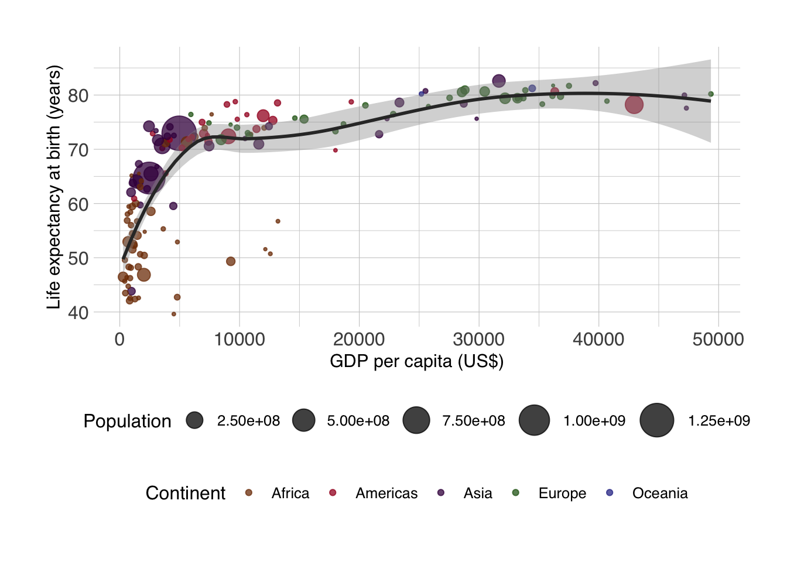
10.8 Repeated-Meausures ANOVA
Okay, so now on to the more complicated work. Here I want to do a repeated-measures ANOVA. It is basically the same as running a regular ANOVA, instead now we want to include time as an interaction effect, and how else to add an interaction effect than to multiply the predictor by the effect of time. A + in this context, means a covariate, which should be interpreted as “controlled for
## Analysis of Variance Table
##
## Response: lifeExp
## Df Sum Sq Mean Sq F value Pr(>F)
## country 141 210176 1491 313.695 < 2.2e-16 ***
## year 1 53919 53919 11347.140 < 2.2e-16 ***
## gdpPercap 1 237 237 49.859 2.578e-12 ***
## country:year 141 13074 93 19.513 < 2.2e-16 ***
## Residuals 1419 6743 5
## ---
## Signif. codes: 0 '***' 0.001 '**' 0.01 '*' 0.05 '.' 0.1 ' ' 1